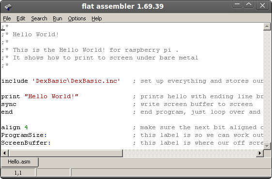
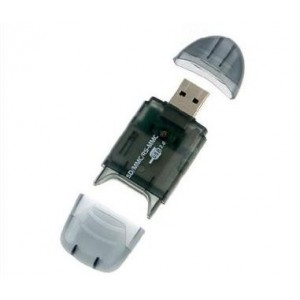

DexBasic
For the Raspberry pi
DexBasic is a cross between
two coding projects i am working on, one a
embedded operating system and the other a basic like language, which
uses
the powerful macros in fasm (Flat Assembler). This basic like language
gives you the power of ASM with the ease of basic.
When you combined this with the low level access of a embedded
operating systems. You start to see how useful DexBasic could be, not
only as a teaching tool, but also as a way to fast track prototyping
new electronic devices, from a software point of view.
The embedded ver of DexBasic is only available for the raspberry
pi, so you will need a raspberry pi, the language part of DexBasic is
also available for windows, linux, Dos and x86 ver of DexOS.
NOTE: Before we start, this is for people who want to code on the raspberry pi without a OS (bare metal) and no linux.
So
to get started you will need a IDE, (which includeds fasmArm, the Arm
ver of fasm),
you can get the latest ver from the fasm site, but i have included a
zip file with all you need, but once your past the basic's, make sure
your using the latest ver, so pop down to the fasm web site to check
what the latest ver is. Now i always use the K.I.S.S philosophy in
all my work and this project is no exception, so the IDE needs no
installing just a single exe, it runs in all windows and under wine in
linux.
If the project take off i will code a new IDE based on the Arduino IDE, talking of Arduino the idea behind DexBasic is very
much like the idea behind the Arduino,
but more software based than hardware.
So lets get started, first unzip the file DexBasic.zip, in there you
should find a folder called DexBasic, in there you will find a exe
called
If you then click on the File label and go down the menu untill you
reach the open label you should see this:
Then if you click on it and click on the hello.asm file, you
should see this:
Than click on the open button and you guest it, you should see this:

Yes the classic hello
world! i will explain how it works and the commands used
later when we get to
the DexBasic language part of this tutorial.
For now i am just going to show you how to get your first hello world!
program written in DexBasic compiled and running on the raspberry pi,
with out a operating system.
Now we have our code loaded in the IDE it's time to compile it
(assemble it really) So click on the run label and move down the menu
until you get to the compile label, like this:
If you get no error (which in this case you should not get) you
should see this:

Congratulations, you have just
made your first DexBasic app for the raspberry pi.
Now that you have compiled your hello world! app, you need to add it to
a very basic embedded operating system (called DexOS) that act like a
low level API between your program and the hardware, but unlike HL
operating systems you are free to talk directly to the hardware, which
we will show you how to do that as the tutorials get more advanced, for
now we need to get it runnig on the raspberry pi, so let do that.
As i said before we need to add it to DexOS, so click on the label File
as before and then move down the menu to the label open, click on it,
but this time click on the file kernel.asm, then click on the open
button you should see this:
Its just join's the two file's hello.bin (the one you just compiled)
with the file DexOS.bin to make one file called kernel.img, thats the
file that the raspberry pi bootloader look for to load off the SD card.
Now to join these file we click on the label run, go down the menu to
the lable compile and if we click on it, a box should pop up telling us
how many pass it's made and the size in bytes, the output of which is a
file called kernel.img in the DexBasic folder, this is the file we put
in the root dir of the SD card.
Now if you already are running linux on your raspberry pi, your best
bet is to get a second SD and format to FAT32 (Note: do not go anything
bigger that 2GB, its not needed for bare metal programming) to do that
you will need a SD card reader, i use one of these which are just over
a £1 on ebay

Plug your SD card reader in along with your SD card, right click the
mouse on the icon that pops up in windows (if your using windows that
is) and go down the menu until you get to format.., like this
Then click format and you should see something like this:
Make sure "file system" is set to fat32, then click start (Note:
make sure it's the right drive), once completed add all the file's from
the folder Boot, that's in the zip file DexBasic, also add the file we
compiled early, namely kernel.img.
Note: Do not included the boot folder its self, just the file's in it,
plus the kernel.img file.
Now you can run the program by just putting the SD card into the
raspberry pi and powering it on.
You should see this:
Now if you only have one sd card and have been running linux on your
raspberry
pi, you will need to make a backup copy of all the files in the root
dir (eg: C:\) but the letter depends on your drive letter, and you only
need to do this in your fat32 partion. Once you have made a backup,
delete the files in the fat32 partion and replace them with the files
from the boot folder along with the kernel.img we compiled earlier,
than
as above just put the sd card in theraspberry pi and reboot.
Thats it for the basic intro, next we will go into more detail.